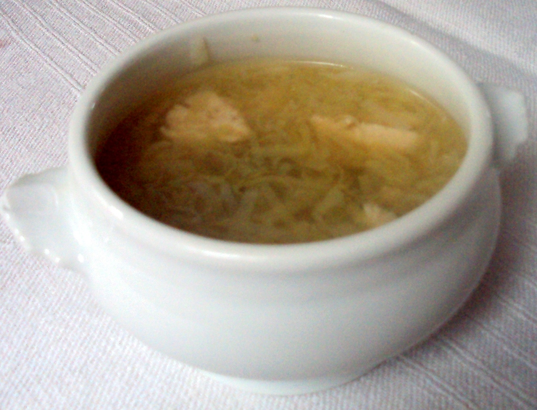

COCK-A-LEECKIE SOUP. SOPA DE PUERROS Y PINTADA
Ingredientes
- 1 pintada grande
- 4 k de puerros tiernos y con mucho blanco
- 100-120 g de ciruelas pasas (sin huesos)
- Sal, pimienta
- nuez moscada
- mantequilla

Limpiar bien la pintada por el interior y el exterior. Atarla y ponerla en un puchero –es conveniente meterla en una muselina o, mejor aún, en una bolsa de garbanzos, para evitar que queden en la sopa huesecillos o restos que la afeen–.. Añadir 2 l de agua fría o la necesaria para cubrirla totalmente de líquido y poner al fuego hasta que se caliente y se inicie el hervor. Espumar cuidadosamente el caldo 2-3 veces.
Mientras, limpiar de hojas verdes los puerros y cortar lo blanco, sólo lo blanco, en juliana muy fina. Echar la juliana de puerros en el caldo ya espumado. Dejar cocer suave, añadiendo el agua necesaria para tener siempre la misma cantidad de sopa.
A media cocción añadir sal y pimienta. Retirar, si las hubiere, las espumas o grasas que suben a la superficie.
Cuando la pintada esté cocida, no deshecha, sacarla del puchero, limpiar de piel, huesos y durezas y trocear la carne. Volver a meter en el caldo la carne limpia y añadir nuez moscada y las ciruelas sin hueso.
Probar de sal y condimentación y rectificar si así se quiere.
Justo antes de servir, añadir como 10-15 g de mantequilla y agitar para montar el caldo.
Servir bien caliente.

CONSEJOS: La sopa Cock-a-leeckie se cocinaba con faisán, gallo u otra ave de caza, y puerros. Con pintada está inmejorable, porque es muy poco grasa, como el faisán. Cuando se quiere para 2-4 personas, se puede hacer con 1 picantón y la tercera parte de los puerros.
Se suele hacer en otoño e invierno con faisán, para que los cazadores puedan almorzar a media mañana algo caliente y reconfortante y, desde luego que esta sopa lo es, tanto como sencilla, pues la sencillez majestuosa es una de las características de la cocina escocesa. Es extraordinaria.
Las sopas de verduras de otoño-invierno, puerros, col, nabos, calabaza, zanahorias, aguaturmas, son en Gran Bretaña muy corrientes como inicio de los festines de Navidad, como el scotch broth, y se les suele añadir pescado, marisco o carne.